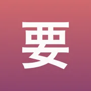
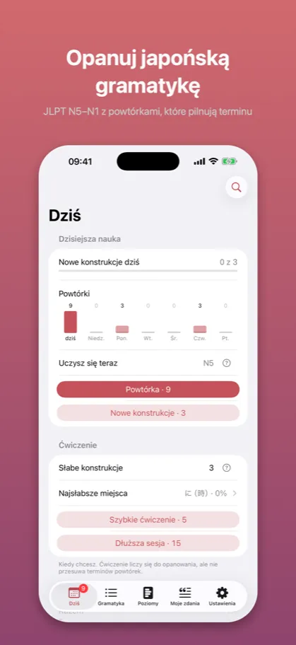
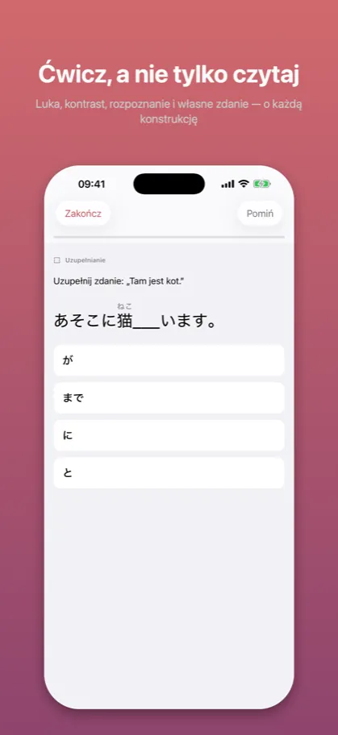
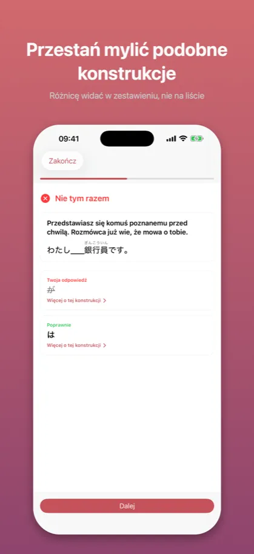
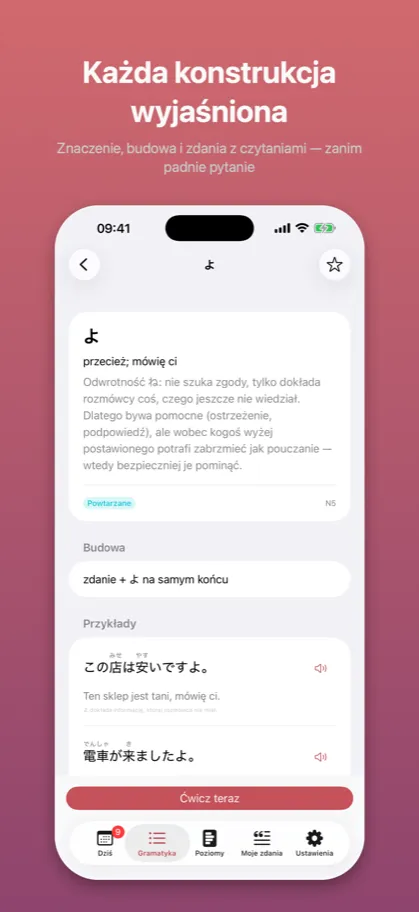
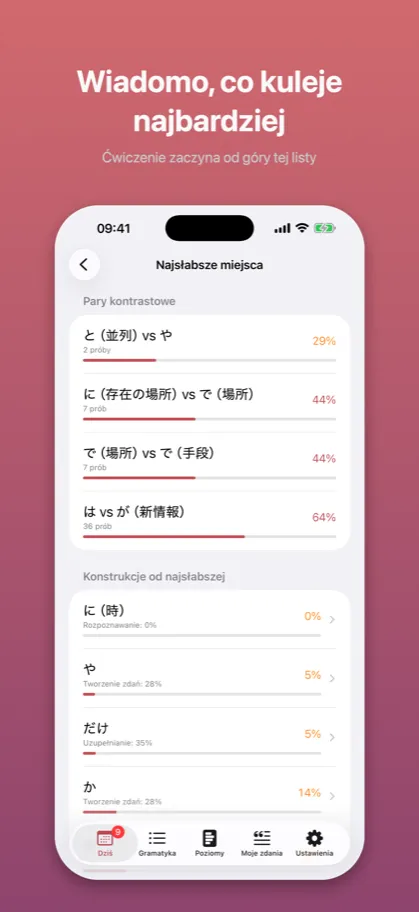

Kaname: Gramatyka japońska要
Powtórki JLPT: N5 N4 N3 N2 N1
App Store →iOSAplikacja darmowa, z zakupem w środku
Mylisz podobne konstrukcje? Zobacz je obok siebie w prawdziwych zdaniach, nie w samym opisie. Do tego skan japońskiego ze zdjęcia i sprawdzenie własnego zdania przez AI.
Jak to wygląda


JLPT N5–N1 z powtórkami, które pilnują terminu


Luka, kontrast, rozpoznanie i własne zdanie – o każdą konstrukcję


Różnicę widać w zestawieniu, nie na liście


Znaczenie, budowa i zdania z czytaniami – zanim padnie pytanie


Ćwiczenie zaczyna od góry tej listy
Opis ze sklepu
Gramatyka japońska od N5 do N1. Kaname sprawdza, czy umiesz konstrukcji użyć, a nie czy pamiętasz regułkę.
CZTERY WSKAŹNIKI NA KONSTRUKCJĘ
- Rozpoznawanie – co wnosi do zdania
- Uzupełnianie – właściwa forma w luce
- Rozróżnianie – odróżnienie od podobnej
- Tworzenie – własne zdanie bez podpowiedzi
Sesja pyta tam, gdzie wypadasz najsłabiej.
PARY KONTRASTOWE
なら czy たら? はず czy わけ? Dwie podobne konstrukcje w jednej sytuacji i wyjaśnienie, czemu pasuje tylko jedna.
POWTÓRKI
Od 4 godzin do 180 dni, według Twoich wyników. „Opanowane” wymaga wszystkich wskaźników i trzech udanych powtórek w ciągu co najmniej trzech tygodni. Nowy poziom otwiera się, gdy poprzedni przeszedł w powtórki.
SKAN I WŁASNE ZDANIA
Zrób zdjęcie zdania z mangi czy podręcznika. Tekst odczytuje telefon, zdjęcie nigdzie nie idzie. Zapisane zdanie wraca w powtórkach jako Twój przykład.
ANALIZA AI (OPCJONALNA)
Napisz zdanie, a model powie, co jest nie tak i dlaczego. Rozpozna też konstrukcje we wklejonym tekście. Bez AI aplikacja działa tak samo.
ZA DARMO
Cały N5 ze wszystkimi ćwiczeniami. Bez limitów i reklam. Kilka analiz AI miesięcznie.
DO KUPIENIA
N4–N1 pojedynczo, w zestawach albo całość: raz, na zawsze, bez konta. Kto kupił wcześniej Premium, ma N2 i N1.
Analiza AI: 14,99 zł miesięcznie albo 119,99 zł rocznie, odnawiana automatycznie, do wyłączenia w ustawieniach Apple ID.
PRYWATNOŚĆ
Bez konta, reklam, śledzenia i analityki. Postęp zostaje na telefonie, nauka działa bez internetu. Sieci używa tylko analiza AI, gdy ją wywołasz: wysyła konstrukcję i Twoje zdanie, nic więcej.
Wyjaśnienia i zdania przykładowe napisano specjalnie na potrzeby tej aplikacji.
Kaname (要) to nit spinający wachlarz, przenośnie „sedno”.
Tego samego autora: Bunmyaku, Katsuyokei, Joshi, Kazoekata, Kuzushi, Keigo, Onomatope, Kifuku i Shindan.
WARUNKI
Warunki korzystania (EULA): https://www.apple.com/legal/internet-services/itunes/dev/stdeula/
Polityka prywatności: https://jd-japanese.pl/kaname/1.2/privacy.html
Powyższy opis jest tym samym tekstem, który stoi na karcie aplikacji w App Store – pochodzi z tego samego pliku.
App Store →iOSAplikacja darmowa, z zakupem w środku
Częste pytania
Czego uczy Kaname?
Gramatyka japońska od N5 do N1. Kaname sprawdza, czy umiesz konstrukcji użyć, a nie czy pamiętasz regułkę.
Ile kosztuje Kaname?
Cały N5 ze wszystkimi ćwiczeniami. Bez limitów i reklam. Kilka analiz AI miesięcznie.
Czy działa bez internetu i bez konta?
Bez konta, reklam, śledzenia i analityki. Postęp zostaje na telefonie, nauka działa bez internetu. Sieci używa tylko analiza AI, gdy ją wywołasz: wysyła konstrukcję i Twoje zdanie, nic więcej.
Wyjaśnienia i zdania przykładowe napisano specjalnie na potrzeby tej aplikacji.
Nauka japońskiego
- Gramatyka japońska N5 – wszystkie punkty z poziomu – Siedem grup gramatyki N5, od szkieletu zdania po ton wypowiedzi – każdy punkt ze znaczeniem, budową i przykładami.
Dokumenty
Pozostałe aplikacje
- Bunmyaku: Japoński w zdaniu — Słówka, kanji i furigana
- Katsuyokei: Odmiana japońska — Czasowniki, formy, fiszki
- Joshi: Partykuły japońskie — Gramatyka i ćwiczenia JLPT
- Kazoekata: Liczniki japońskie — Liczenie, kanji, ćwiczenia
- Kuzushi: Mowa potoczna — Anime, dorama i skróty
- Shindan: Poziom japońskiego — Test JLPT: N5 N4 N3 N2 N1
- Keigo: Grzeczność japońska — Japoński formalny do pracy
- Kifuku: Akcent japoński — Wymowa, intonacja, słuchanie
- Onomatope: Dźwięki i wyrażenia — Słówka z mangi i anime